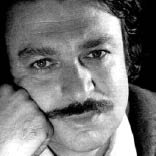

(1934 – 1977)

Yazdığı bir romanla ülkesinin edebiyat dünyasının çehresini değiştirebilmek elbette her yazarın hayalidir ama bunu başarabilen çok az yazar vardır. Oğuz Atay, başyapıtı "Tutunamayanlar" ile bu düşü başardı ve okuyucusuna her zaman karşılık bulacak bir soru sorup ayrıldı aramızdan: "Ben buradayım, Ey Okur, sen neredesin?"
Türk romanının büyük ustalarından biri olan Oğuz Atay, 12 Ekim 1934'te İnebolu'da doğdu. Babası Cemil Atay 6. ve 7. Dönem Sinop, 8. Dönem Kastamonu milletvekilliği yapmış bir hukukçuydu. Beş yaşındayken ailesiyle Ankara'ya taşınan yazar, 1951'de Ankara Maarif Koleji'ni, 1957'de de İTÜ İnşaat Fakültesi'ni bitirdi ve akademik kariyer yapmayı seçerek okula devam etti. Üç yıl sonra İstanbul Devlet Mühendislik ve Mimarlık Akademisi (şimdiki Yıldız Teknik Üniversitesi) İnşaat Bölümü'nde öğretim üyesi oldu. 1975'te doçent olan Atay, Topografya adlı bir de mesleki kitap yazdı. Bir yandan akademisyenliğe devam eden sanatçı, bir yandan da çeşitli dergi ve gazetelerde makale ve söyleşiler yayınlıyordu. Oğuz Atay, ilk romanı Tutunamayanlar'ın 1970 yılında TRT Roman Yarışması'nı kazanması üzerine edebiyat dünyasına çok hızlı bir giriş yaptı. Romanın 1972'de yayımlanmasının ardından edebiyat dünyasında çok ateşli tartışmalar yaşandı.
Birçok eleştirmene göre Tutunamayanlar'daki edebi yetkinlik, Türk romanını çağdaş roman anlayışıyla aynı hizaya getirmiş ve ona çok şey kazandırmıştır. Dönemin genel anlayışının tersine bireyin yalnızlığını ve kendi sıkıntılarına çözüm arayışlarını anlatan roman, yayımlandığı günden bu yana Türk romanının en çok ilgi gören, en çok okunan ve üzerinde en çok tartışılan romanlarından biri olmaya devam etti.
Oğuz Atay'ın büyük etki yaratan eseri Tutunamayanlar'ı 1973'te yayımlanan Tehlikeli Oyunlar adlı ikinci romanı izledi. Aynı yıl yayımlanan Oyunlarla Yaşayanlar adlı oyunu Devlet Tiyatrosu'nda da sahnelenmiştir. Öykülerini Korkuyu Beklerken başlığı altında toplayan Atay, 1911-1967 yılları arasında yaşamış Prof. Mustafa İnan'ın hayatını konu alan Bir Bilim Adamının Romanı adlı yapıtını 1975 yılında yayımladı. Sanatçı, beyninde çıkan bir tümör nedeniyle uzunca bir süre Londra'da tedavi gördü. Oğuz Atay, en büyük projesi olarak adlandırdığı "Türkiye'nin Ruhu" adlı kitabını yazamadan 13 Aralık 1977 tarihinde İstanbul'da öldü ve Edirnekapı Sakızağacı Mezarlığı'na defnedildi.
Ölümünün ardından1987'de Günlük, 1998'de ise Eylembilim adlı kitapları yayımlanmıştır. Sağlığında hiçbir kitabı ikinci baskı yapamayan Atay'ın kitapları, ölümünden sonra büyük ilgi gördü ve defalarca basıldı.
Oğuz Atay özellikle Tutunamayanlar romanında bireyin modern şehir yaşamı içinde yaşadığı yalnızlığı, toplumdan kopuşları ve toplumsal ahlaka, kalıplaşmış düşüncelere yabancılaşan, "tutunamayan" bireylerin iç dünyasını anlatır. Sanatçının yapıtları eleştiri, mizah ve ironi barındırır.
Romanları: Tutunamayanlar (1972) (Yazılışı: 1970), Tehlikeli Oyunlar (1973), Bir Bilim Adamının Romanı (1975), Korkuyu Beklerken (1975), Günlük (1987), Eylembilim (1998)
Hakkında Yazılan Kitaplar: Oğuz Atay'da Aydın Olgusu (Yıldız Ecevit, Ara Yayıncılık, 1989), Oğuz Atay'ın Dünyası (Tatyana Sejppel, İletişim Yayınları, 1989), Ben Buradayım... (Yıldız Ecevit, İletişim Yayınları, 2005)